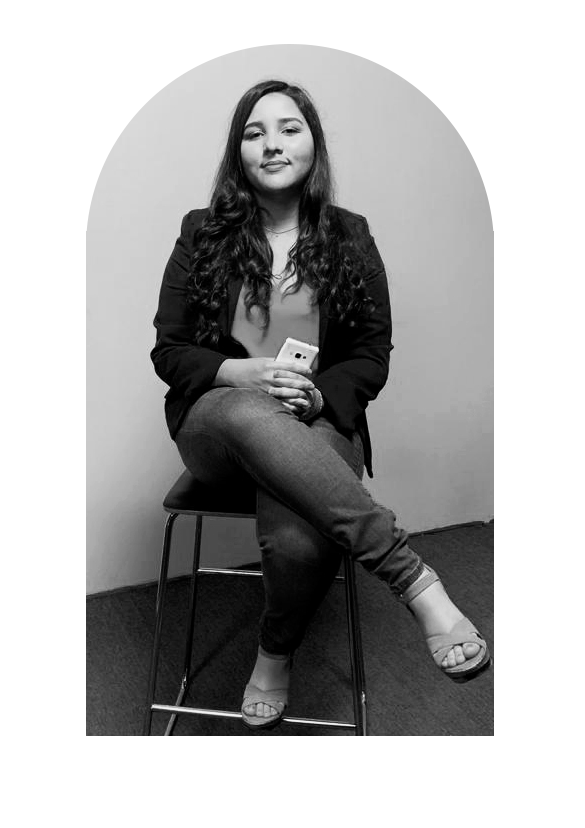

Hi! I'm Johanny.

I'm Johanny Colman, a 24-year-old graphic designer with experience in digital illustration, video editing, and motion graphics.
My passion for graphic design started at a young age. I began my career in illustration using Illustrator, a software that I have become an expert in thanks to my constant training and updates with each new version.
Throughout my career, I have expanded my knowledge and skills in software such as Photoshop, Fresco, and Procreate, which has allowed me to develop my skills as an illustrator for different areas such as children's books, stickers, and screen printing.